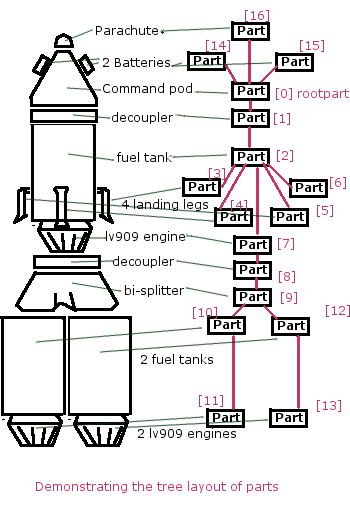

Ship parts and PartModules
As of v0.15, kOS has introduced the ability to access the functionality of Parts' actions, and right-click context menus. However, to understand how to use them it is necessary to first understand a little bit about the structure of parts in a vessel in Kerbal Space Program.
In Kerbal Space Program, a Vessel is a collection of Parts arranged in a tree Structure. In kOS, you can access the parts one of two ways:
Tutorial:
If you prefer the tutorial approach to learning, the following links will walk you through a specific pair of tasks to introduce you to this system. If you prefer a methodical reference approach, skip the tutorials and read on, then come back to the tutorials afterward.
TODO: PUT LINKS POINTING TO A TUTORIAL WALKING THROUGH WHAT THIS IS TEACHING.
THERE NEEDS TO BE TWO TUTORIALS MINIMUM:
-
A Tuturial made on an ONLY STOCK (other than kOS of course) install, using only STOCK parts to do something interesting.
-
A Tutorial more complex showing that this can be used with mods too, probably the Leg Leveller example from the teaser video, but with the code updated to use the newer part query methods.
Reference:
Parts
The short and quick thing to remember
If you only remember one technique, it should be using the :PARTSDUBBED method described down below. It's the most useful one that covers all the other cases.
Accessing the parts by various naming systems
Any time you have a vessel variable, you can use these suffixes to get lists of parts on it by their names using several different naming schemes:
Part Tag: A part's tag is whatever custom name you have given it using the nametag system described here. This is probably the best naming convention to use because it lets you make up whatever name you like for the part and use it to pick the parts you want to deal with in your script.
Part Title: A part's title is the name it has inside the GUI interface on the screen that you see as the user.
Part Name: A part's name is the name it is given behind the scenes in KSP. It never appears in the normal GUI for the user to see, but it is used in places like Part.cfg files, the saved game persistence file, the ModuleManager mod, and so on.
Assuming you've done one of these:
SET somevessel to SHIP.
// Or this:
SET somevessel to VESSEL("some vessel's name").
// Or this:
SET somevessel to TARGET. // assuming TARGET is a vessel and not a body or docking port.
Then you can do one of these to query based on any of the above schemes:
// --------- :PARTSTAGGED -----------
// Finds all parts that have a nametag (Part:Tag suffix) matching the value given:
SET partlist to somevessel:PARTSTAGGED(nametag_of_part)
// --------- :PARTSTITLED -----------
// Finds all parts that have a title (Part:Title suffix) matching the value given:
SET partlist to somevessel:PARTSTITLED(title_of_part)
// --------- :PARTSNAMED -----------
// Finds all parts that have a name (Part:Name suffix) matching the value given:
SET partlist to somevessel:PARTSNAMED(name_of_part)
// --------- :PARTSDUBBED -----------
// Finds all parts matching the string in any naming scheme, without caring what kind of naming scheme it is
// This is essentially the combination of all the above three searches.
SET partlist to somevessel:PARTSDUBBED(any_of_the_above)
In all cases the checks are performed case-insensitively.
These are different styles of naming parts, all slightly different, and you can use any of them you like to get access to the part or parts you're interested in.
They all return a List of Parts rather than just one single part. This is because any name could have more than one hit. If you expect to get just one single hit, you can just look at the zero-th value of the list, like so:
SET onePart TO somevessel:PARTSDUBBED("my favorite engine")[0].
If the name does not exist, you can tell by seeing if the list returned has a length of zero:
IF somevessel:PARTSDUBBED("my favorite engine"):LENGTH == 0 {
PRINT "There is no part named 'my favorite engine'.".
}.
Examples:
// Change the altitude at which all the drouge chutes will deploy:
FOR somechute IN somevessel:PARTSNAMED("parachuteDrogue") {
somechute:GETMODULE("ModuleParachute"):SETFIELD("DEPLOYALTITUDE", 1500).
}.

Accessing the parts list as a tree
Starting from the root part, Vessel:ROOTPART (SHIP:ROOTPART, TARGET:ROOTPART, or Vessel("some ship name"):ROOTPART). You can get all its children parts with the Part:CHILDREN suffix. Given any Part, you can access its Parent part with Part:PARENT, and detect if it doesn't have a parent with Part:HASPARENT. By walking this tree you can see how the parts are connected together.
The diagram here shows an example of a small vessel and how it might get represented as a tree of parts in KSP.
Accessing the parts list as a list
You can get a list of all the parts on a vessel using the suffix :PARTS, or by using the LIST PARTS IN command. When you do this, the resulting list is a "flattening" of the tree of parts, created by use of a depth-first search starting from the root part. In the diagram shown here, the red numbers indicate one possible way the parts might be represented in LIST indeces if you used SHIP:PARTS on such a vessel. Note there is no guarantee it would look exactly like this, as it depends on exactly what order the parts were attached in the VAB.
Shortcuts to smaller lists of parts
If you know some of the properties of the parts you're interested in, you can ask kOS to give you a shorter list of parts that just includes those parts, using the following suffixes:
Return a List of just the parts who's name is "someNameHere":
SET ves TO SHIP. // or Target or Vessel("ship name").
SET PLIST TO ves:PARTSNAMED("someNameHere").
Return a List of just the parts that have had some sort of activity attached to action group 1:
SET ves TO SHIP. // or Target or Vessel("ship name").
SET PLIST TO ves:PARTSINGROUP(AG1).
PartModules and the right-click menu:
Each Part, in turn has a list of what are called PartModules on it. A PartModule is a collection of variables and executable program hooks that gives the part some of its behaviors and properties. Without a PartModule, a part is really nothing more than a passive bit of structure that has nothing more than a shape, a look, and a strength to it. Some of the parts in the "structure" tab of the parts bin, like pure I-beams and girders, are like this - they have no PartModules on them. But all of the interesting parts you might want to do something with will have a PartModule on them. Through PartModules, kOS will now allow you to manipulate or query anything that any KSP programmer, stock or mod, has added to the rightclick menu, or action group actions, for a part.
PartModules, Stock vs Mods:
It should be noted that even if you play an entirely stock installation of KSP (well, stock other than for kOS, obviously, otherwise you wouldn't be reading this), you will still have PartModules on your Parts. Some people have muddied the terminology difference between "Mod" meaning "modification" and "Mod" meaning "module". It should be made absolutely clear that PartModules are a feature of stock KSP, and BOTH stock KSP parts and Modded KSP Parts use them. Even if all you want to do is affect the stock behavior of stock parts in a completely unmodded way, you'll still want to know about PartModules in order to do so.
PartModules and ModuleManager-like behavior:
Some Mods (meaning "modifications" here) operate by adding a new PartModule to every single part in the game. One example of such a mod is the Deadly Reentry mod. In order to track how fragile each part is and how well it withstands re-entry heat, the Deadly Re-entry mod adds a small module to each part in the game, even the stock parts that would normally have no mods at all on them.
Other Mods allow the user to add PartModule's to any part they feel like, through the use of the ModuleManager mod.
Because of these, it's impossible in this explanatory document to make blanket statements about which PartModules will exist on which Parts. Everything that is said here needs to be taken with a grain of salt, as depending on the mods you've installed on your game, you may find PartModules on your parts that are not normally on those parts for most other players.
What a PartModule means to a kOS script
There are 3 ways that a kOS script may interface with a PartModule.
TODO - TAKE SOME SCREENSHOTS TO PUT ALONGSIDE THIS TEXT, SHOWING EXAMPLES OF THESE THINGS IN THE USER INTERFACE. WE NEED A SCREENSHOT THAT SHOWS BOTH A KSPFIELD AND A KSPEVENT IN A PART'S RMB CONTEXT MENU, A SCREENSHOT THAT SHOWS FIELDS COMING FROM MULTIPLE PARTMODULES, AND A SCREENSHOT SHOWING THE KSPACTIONS IN THE VAB ACTION EDITOR.
KSPFields
A KSPField is a single variable that a PartModule attaches to a part. Some of the KSPFields are also displayed in the RMB context menu of a part. It has a current value, and if the field has had a "tweakable" GUI interface attached to it, then it's also a settable field by the user manipulating the field in the context menu. In kOS, you can only access those KSPFields that are currently visible on the RMB context menu. We, the developers of kOS, instituted this rule out of respect for the developers of other mods and the stock KSP game. If they didn't allow the user to see or manipulate the variable directly in the GUI, then we shouldn't allow it to be manipulated or seen by a kOS script either.
KSPFields are read or manipulated by the following suffixes of PartModule
-
:GETFIELD("name of field").
-
:SETFIELD("name of field", new_value_for_field).
Note, that these are suffixes of the partmodule and NOT suffixes of the Part itself. This is because two different PartModule's on the same Part might have used the same field name as each other, and it's important to keep them separate.
KSPEvents
A KSPEvent, just like a KSPField, is a thing that a PartModule can put on the RMB context menu for a part. The difference is that a KSPEvent does not actually HAVE a value. It's not a variable. Rather it's just a button with a label next to it. When you press the button, it causes some sort of software inside the PartModule to run. An example of this is the "undock node" button you see on many of the docking ports.
Difference between a KSPEvent and a boolean KSPField: If you see a label next to a button in the RMB context menu, it might be a KSPEvent, OR it might be a boolean KSPField variable which is editable with a tweakable GUI. They look exactly the same in the user interface. To tell the difference, you need to look at what happens when you click the button. If clicking the button causes the button to depress inward and stay pressed in until you click it again, then this is a boolean value KSPField. If clicking the button pops the button in and then it pops out again right away, then this is a KSPEvent instead.
KSPEvents are manipulated by the following suffix of PartModule
- :DOEVENT("name of event").
This causes the event to execute once.
KSPActions:
A KSPAction is a bit different from a KSPField or KSPEvent. A KSPAction is like a KSPEvent in that it causes some software inside the PartModule to be run. But it doesn't work via the RMB context menu for the part. Instead KSPAction's are those things you see being made avaiable to you as options you can assign into an Action Group in the VAB or SPH. When you have the action group editor tab enabled in the VAB or SPH, and then click on a part, that part asks all of its PartModules if they have any KSPActions they'd like to provide access to, and gathers all those answers and lists them in the user interface for you to select from and assign to the action group.
kOS now allows you to access any of those actions without necessarily having had to assign them to any action groups if you didn't want to.
KSPActions are manipulated by the following suffix of PartModule
- :DOACTION("name of action", new_boolan_value).
The name of the action is the name you see in the action group editor interface, and the new boolean value is either True or False. Unlike KSPEvents, a KSPAction has two states, true and false. When you toggle the brakes, for example, they go from on to off, or from off to on. When you call :DOACTION, you are specifying if the KSPAction should behave as if you have just toggled the group on, or just toggled the group off. But instead of actually toggling an action group - you are just telling the single PartModule on a single Part to perform the same behavior it would have performed had that action been assigned to an action group. You don't actually have to assign the action to an action group for this to work.
Exploring what's there to find Field/Event/Action Names:
Okay, so you understand all that, but you're still thinking "but how do I KNOW what the names of part modules are, or what the names of the fields on them are? I didn't write all that C# source code for all the modules."
There are some additional suffixes that are designed to help you explore what's available so you can learn the answers to these questions. Also, some of the questions can be answered by other means:
What PartModules are there on a part?
To answer this question you can do one of two things:
A: Use the part.cfg file All parts in KSP come with a part.cfg file defining them, both for modded parts and stock parts. If you look at this file, it will contain sections looking something like this:
// Example snippet from a Part.cfg file:
MODULE
{
name = ModuleCommand
That would tell you that this part has a PartModule on it called ModuleCommand. there can be multiple such modules per part. But it doesn't let you know about PartModules that get added afterward during runtime, by such things as the ModuleManager mod.
B: Use the :MODULES suffix of Part: If you have a handle on any part in kOS, you can print out the value of :MODULES and it will tell you the string names of all the modules on the part. For example:
FOR P IN SHIP:PARTS {
LOG ("MODULES FOR PART NAMED " + P:NAME) TO MODLIST.
LOG P:MODULES TO MODLIST.
}.
Do that, and the file MODLIST should now contain a verbose dump of all the module names of all the parts on your ship. You can get any of the modules now by using Part:GETMODULE("module name").
What are the names of the stuff that a PartModule can do?
These three suffixes tell you everything a part module can do:
SET MOD TO P:GETMODULE("some name here").
LOG ("These are all the things that I can currently USE GETFIELD AND SETFIELD ON IN " + MOD:NAME + ":") TO NAMELIST.
LOG MOD:ALLFIELDS TO NAMELIST.
LOG ("These are all the things that I can currently USE DOEVENT ON IN " + MOD:NAME + ":") TO NAMELIST.
LOG MOD:ALLEVENTS TO NAMELIST.
LOG ("These are all the things that I can currently USE DOACTION ON IN " + MOD:NAME + ":") TO NAMELIST.
LOG MOD:ALLACTIONS TO NAMELIST.
After that, the file NAMELIST would contain a dump of all the fields on this part module that you can use.
BE WARNED! Names are able to dynamically change!
Some PartModules are written to change the name of a field when something happens in the game. For example, you might find that after you've done this:
SomeModule:DOEVENT("Activate").
That this doesn't work anymore after that, and the "Activate" event now causes an error.
And the reason is that the PartModule chose to change the label on the event. It changed to the word "Deactivate" now. kOS can no longer trigger an event called "Activate" because that's no longer its name.
Be on the lookout for cases like this. Experiment with how the context menu is being manipulated and keep in mind that the list of strings you got the last time you exectued :ALLFIELDS a few minutes ago might not be the same list you'd get if you ran it now, because the PartModule has changed what is being shown on the menu.